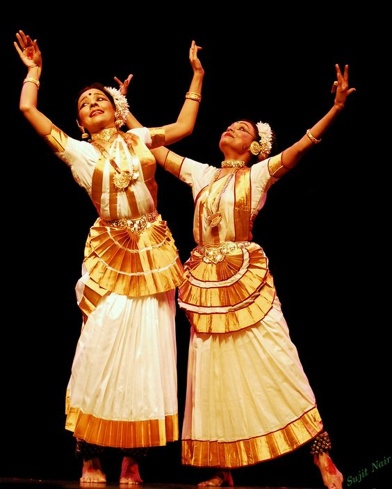

Mohiniyattam

Mohiniyattam (Mohiniattam) is a classical dance form of Kerala in South India. The origin and popularity of this dance form is closely tagged to the great Tamil dance master Vadivelu, one of the Thanjavur quartets. One among the eight Indian classical dance forms, Mohiniyattam is a graceful dance to watch and is a solo recital by women. The term Mohiniyattam comes from the words mohini meaning a woman who enchants onlookers and aattam meaning graceful and sensuous body movements. Thus, the word Mohiniyattam literally means - dance of the enchantress.
Mohiniyattam has a legend attached to it as per the Hindu mythology. It says that, after the ocean of milk was churned jointly by the gods and the demons to extract the elixir of life, the demons took the divine brew by force. Following the incident, Lord Vishnu came to the rescue of the gods. He allured the demons by taking the form of a woman with outstanding beauty called Mohini and stole the elixir of life from them and handed it to the gods. The enticing acts of Mohini are reflected in the dance form of Mohiniyattam. At a time when the Devadasi tradition was prevalent in many parts of south India, Mohiniyattam used to be performed by Devadasis (temple dancers) in temples, during the rule of the Chera kings from 9 to 12 C.E.
This dance form also has elements of other performing art forms of Kerala viz. Koothu and Kutiyattam in it. Besides, Mohiniyattam also came under the influence of two other south Indian dance forms - Bharatanatyam and Kathakali. Mohiniyattam in its early days went through ups and downs, which eventually got steadied during the reign of King Swathi Thirunal of the erstwhile Travancore kingdom.